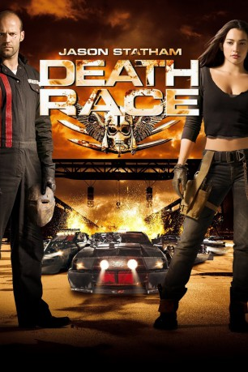

#288 Death Race
 
 IMDB-Wertung: 6.4 / 10
IMDB-Wertung: 6.4 / 10  Metascore: 43
Metascore: 43 
USA 2012. Private Firmen regieren das von Arbeitslosigkeit und Verbrechen zerrüttete Land. Sämtliche Gefängnisse sind hoffnungslos überfüllt. Die berüchtigtste Strafanstalt ist „Terminal Island". Hier veranstaltet die skrupellose Knastchefin Hennessy unter ihren Insassen Autorennen der besonderen Art. In regelmäßigen Abständen liefern sich eine Handvoll fahrender Gladiatoren ein dreitägiges Rennen um Leben und Tod. Die Piste ist gespickt mit tödlichen Fallen. Darüber hinaus ist alles erlaubt, was Auto und Waffenarsenal hergeben. Hennessy lässt das blutige Spektakel stets live im Internet übertragen, selbstverständlich gegen eine saftige Gebühr.
Jahr: 2008
Dauer: 105 Minuten
FSK: 18
Land: USA Studio: Universal PicturesTonspuren: DTS - ,
Untertitel:
Auflösung: 1080p (1920×816) Größe: 8366 MB
Genre: Action, Sci-Fi, Thriller
Regisseur: Paul W.S. Anderson
Drehbuch: Paul W.S. Anderson, Paul W.S. Anderson, Robert Thom, Charles B. Griffith, Ib Melchior
Soundtrack: Paul Haslinger
Darsteller:
 Jason Statham als Jensen Ames
Jason Statham als Jensen Ames- Joan Allen als Hennessey
 Ian McShane als Coach
Ian McShane als Coach Tyrese Gibson als Machine Gun Joe
Tyrese Gibson als Machine Gun Joe- Natalie Martinez als Case
- Max Ryan als Pachenko
 Jason Clarke als Ulrich
Jason Clarke als Ulrich Fred Koehler als Lists
Fred Koehler als Lists- Jacob Vargas als Gunner
- Justin Mader als Travis Colt
 Robert LaSardo als Grimm
Robert LaSardo als Grimm- Robin Shou als 14K
 Benz Antoine als Joe's Navigator
Benz Antoine als Joe's Navigator Christian Paul als Joe's Navigator
Christian Paul als Joe's Navigator- Janaya Stephens als Suzy
- John Fallon als Neo Nazi
- Dan Jeannotte als Hennessey Tech
 David Carradine als Frankenstein
David Carradine als Frankenstein- Nir Assayag als Disgruntled Inmate #6 , uncredited
 Abdul Ayoola als Siad , uncredited
Abdul Ayoola als Siad , uncredited- Marcello Bezina als Policeman #1 , uncredited
 Melantha Blackthorne als Pachenko's Navigator , uncredited
Melantha Blackthorne als Pachenko's Navigator , uncredited- Shane Cardwell als Carson , uncredited
- Marie France Denoncourt als Trans Am #2 Navigator , uncredited
- Gerardo Lo Dico als Prison Guard - 2008 , uncredited
- Sharlene Royer als Grimm's Navigator , uncredited
- Danny Blanco Hall als Joe's Navigator
- Bruce McFee als Old Timer
- Cory Fantie als Disgusted Worker
- Russell Ferrier als Angry Worker
- Anna-Marie Frances Lea als Nasty Teller
- Dick Ervasti als Commercial
- Lydie Bounay als BMW Navigator , uncredited
- Ruth Chiang als 14K's Navigator , uncredited
- Carolyn Day als Colt's Navigator , uncredited
- Miguel Dugal als Pachenko's Goon , uncredited
- Jere Gillis als Policeman #2 , uncredited
- Nathalie Girard als Boattail Navigator , uncredited
- Larry Goldstein als Disgruntled Inmate #5 , uncredited
- Ivan Peric als Steel Factory Worker , uncredited
Datei: X:\FSK18-Collections\Death Race\Death Race (2008, FSK18, 1920x816).mkv seit 16.02.2015
Festplatte: FSK18
 Es gibt insgesamt 7 Filme in der Gruppe 'FSK18-Collections\Death Race'
Es gibt insgesamt 7 Filme in der Gruppe 'FSK18-Collections\Death Race'